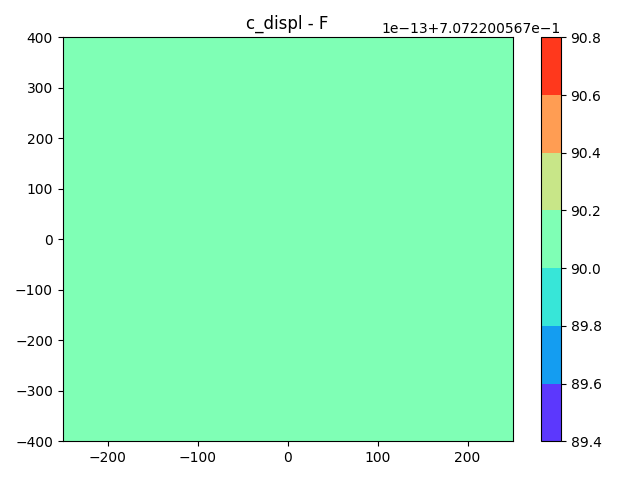

Note
Click here to download the full example code
Sobol' sensitivity analysis.¶
Compute and plot the total Sobol' indices for the field constraints \(c_{\text{stress}}\)
and \(c_{\text{displacement}}\) where \(F\), \(E\) and \(\sigma_{\text{all}}\) are random
variables defined by BeamUncertainSpace.
-



Out:
/builds/gemseo/dev/gemseo-umdo/.tox/doc/lib64/python3.9/site-packages/pydantic/main.py:209: DeprecationWarning: Conversion of an array with ndim > 0 to a scalar is deprecated, and will error in future. Ensure you extract a single element from your array before performing this operation. (Deprecated NumPy 1.25.)
validated_self = self.__pydantic_validator__.validate_python(data, self_instance=self)
WARNING - 00:21:19: No coupling in MDA, switching chain_linearize to True.
INFO - 00:21:19:
INFO - 00:21:19: *** Start SobolAnalysisSamplingPhase execution ***
INFO - 00:21:19: SobolAnalysisSamplingPhase
INFO - 00:21:19: Disciplines: MDOChain
INFO - 00:21:19: MDO formulation: MDF
INFO - 00:21:19: Running the algorithm OT_SOBOL_INDICES:
INFO - 00:21:19: 1%| | 3/496 [00:00<00:02, 239.08 it/sec]
INFO - 00:21:19: 1%| | 4/496 [00:00<00:01, 282.73 it/sec]
INFO - 00:21:19: 1%| | 5/496 [00:00<00:01, 319.40 it/sec]
INFO - 00:21:19: 1%| | 6/496 [00:00<00:01, 350.88 it/sec]
INFO - 00:21:19: 1%| | 7/496 [00:00<00:01, 378.82 it/sec]
INFO - 00:21:19: 2%| | 8/496 [00:00<00:01, 402.32 it/sec]
INFO - 00:21:19: 2%| | 9/496 [00:00<00:01, 421.66 it/sec]
INFO - 00:21:19: 2%| | 10/496 [00:00<00:01, 438.22 it/sec]
INFO - 00:21:19: 2%| | 11/496 [00:00<00:01, 454.36 it/sec]
INFO - 00:21:19: 2%| | 12/496 [00:00<00:01, 467.63 it/sec]
INFO - 00:21:19: 3%| | 13/496 [00:00<00:01, 480.55 it/sec]
INFO - 00:21:19: 3%| | 14/496 [00:00<00:00, 492.66 it/sec]
INFO - 00:21:19: 3%| | 15/496 [00:00<00:00, 502.97 it/sec]
INFO - 00:21:19: 3%| | 16/496 [00:00<00:00, 512.65 it/sec]
INFO - 00:21:19: 3%| | 17/496 [00:00<00:00, 521.90 it/sec]
INFO - 00:21:19: 4%| | 18/496 [00:00<00:00, 530.29 it/sec]
INFO - 00:21:19: 4%| | 19/496 [00:00<00:00, 538.35 it/sec]
INFO - 00:21:19: 4%| | 20/496 [00:00<00:00, 545.49 it/sec]
INFO - 00:21:19: 4%| | 21/496 [00:00<00:00, 551.25 it/sec]
INFO - 00:21:19: 4%| | 22/496 [00:00<00:00, 557.34 it/sec]
INFO - 00:21:19: 5%| | 23/496 [00:00<00:00, 562.88 it/sec]
INFO - 00:21:19: 5%| | 24/496 [00:00<00:00, 568.14 it/sec]
INFO - 00:21:19: 5%| | 25/496 [00:00<00:00, 573.13 it/sec]
INFO - 00:21:19: 5%| | 26/496 [00:00<00:00, 577.84 it/sec]
INFO - 00:21:19: 5%| | 27/496 [00:00<00:00, 582.55 it/sec]
INFO - 00:21:19: 6%| | 28/496 [00:00<00:00, 586.77 it/sec]
INFO - 00:21:19: 6%| | 29/496 [00:00<00:00, 590.84 it/sec]
INFO - 00:21:19: 6%| | 30/496 [00:00<00:00, 594.39 it/sec]
INFO - 00:21:19: 6%| | 31/496 [00:00<00:00, 597.99 it/sec]
INFO - 00:21:19: 6%| | 32/496 [00:00<00:00, 600.95 it/sec]
INFO - 00:21:19: 7%| | 33/496 [00:00<00:00, 603.94 it/sec]
INFO - 00:21:19: 7%| | 34/496 [00:00<00:00, 607.06 it/sec]
INFO - 00:21:19: 7%| | 35/496 [00:00<00:00, 610.14 it/sec]
INFO - 00:21:19: 7%| | 36/496 [00:00<00:00, 612.24 it/sec]
INFO - 00:21:19: 7%| | 37/496 [00:00<00:00, 614.55 it/sec]
INFO - 00:21:19: 8%| | 38/496 [00:00<00:00, 616.85 it/sec]
INFO - 00:21:19: 8%| | 39/496 [00:00<00:00, 619.35 it/sec]
INFO - 00:21:19: 8%| | 40/496 [00:00<00:00, 621.98 it/sec]
INFO - 00:21:19: 8%| | 41/496 [00:00<00:00, 624.35 it/sec]
INFO - 00:21:19: 8%| | 42/496 [00:00<00:00, 626.39 it/sec]
INFO - 00:21:19: 9%| | 43/496 [00:00<00:00, 628.27 it/sec]
INFO - 00:21:19: 9%| | 44/496 [00:00<00:00, 630.13 it/sec]
INFO - 00:21:19: 9%| | 45/496 [00:00<00:00, 630.79 it/sec]
INFO - 00:21:19: 9%| | 46/496 [00:00<00:00, 632.48 it/sec]
INFO - 00:21:19: 9%| | 47/496 [00:00<00:00, 634.02 it/sec]
INFO - 00:21:19: 10%| | 48/496 [00:00<00:00, 635.48 it/sec]
INFO - 00:21:19: 10%| | 49/496 [00:00<00:00, 637.00 it/sec]
INFO - 00:21:19: 10%| | 50/496 [00:00<00:00, 638.58 it/sec]
INFO - 00:21:19: 10%| | 51/496 [00:00<00:00, 640.14 it/sec]
INFO - 00:21:19: 10%| | 52/496 [00:00<00:00, 641.51 it/sec]
INFO - 00:21:19: 11%| | 53/496 [00:00<00:00, 642.95 it/sec]
INFO - 00:21:19: 11%| | 54/496 [00:00<00:00, 644.28 it/sec]
INFO - 00:21:19: 11%| | 55/496 [00:00<00:00, 645.40 it/sec]
INFO - 00:21:19: 11%| | 56/496 [00:00<00:00, 646.60 it/sec]
INFO - 00:21:19: 11%| | 57/496 [00:00<00:00, 647.77 it/sec]
INFO - 00:21:19: 12%| | 58/496 [00:00<00:00, 649.23 it/sec]
INFO - 00:21:19: 12%| | 59/496 [00:00<00:00, 650.45 it/sec]
INFO - 00:21:19: 12%| | 60/496 [00:00<00:00, 651.23 it/sec]
INFO - 00:21:19: 12%| | 61/496 [00:00<00:00, 652.49 it/sec]
INFO - 00:21:19: 12%| | 62/496 [00:00<00:00, 653.63 it/sec]
INFO - 00:21:19: 13%| | 63/496 [00:00<00:00, 654.61 it/sec]
INFO - 00:21:19: 13%| | 64/496 [00:00<00:00, 655.67 it/sec]
INFO - 00:21:19: 13%| | 65/496 [00:00<00:00, 656.66 it/sec]
INFO - 00:21:19: 13%| | 66/496 [00:00<00:00, 657.58 it/sec]
INFO - 00:21:19: 14%| | 67/496 [00:00<00:00, 658.74 it/sec]
INFO - 00:21:19: 14%| | 68/496 [00:00<00:00, 659.79 it/sec]
INFO - 00:21:19: 14%| | 69/496 [00:00<00:00, 660.69 it/sec]
INFO - 00:21:19: 14%| | 70/496 [00:00<00:00, 661.54 it/sec]
INFO - 00:21:19: 14%| | 71/496 [00:00<00:00, 662.34 it/sec]
INFO - 00:21:19: 15%| | 72/496 [00:00<00:00, 663.08 it/sec]
INFO - 00:21:19: 15%| | 73/496 [00:00<00:00, 663.96 it/sec]
INFO - 00:21:19: 15%| | 74/496 [00:00<00:00, 664.66 it/sec]
INFO - 00:21:19: 15%| | 75/496 [00:00<00:00, 665.47 it/sec]
INFO - 00:21:19: 15%| | 76/496 [00:00<00:00, 666.27 it/sec]
INFO - 00:21:19: 16%| | 77/496 [00:00<00:00, 667.16 it/sec]
INFO - 00:21:19: 16%| | 78/496 [00:00<00:00, 667.98 it/sec]
INFO - 00:21:19: 16%| | 79/496 [00:00<00:00, 668.74 it/sec]
INFO - 00:21:19: 16%| | 80/496 [00:00<00:00, 669.61 it/sec]
INFO - 00:21:19: 16%| | 81/496 [00:00<00:00, 670.21 it/sec]
INFO - 00:21:19: 17%| | 82/496 [00:00<00:00, 670.73 it/sec]
INFO - 00:21:19: 17%| | 83/496 [00:00<00:00, 671.40 it/sec]
INFO - 00:21:19: 17%| | 84/496 [00:00<00:00, 671.81 it/sec]
INFO - 00:21:19: 17%| | 85/496 [00:00<00:00, 672.52 it/sec]
INFO - 00:21:19: 17%| | 86/496 [00:00<00:00, 672.95 it/sec]
INFO - 00:21:19: 18%| | 87/496 [00:00<00:00, 673.36 it/sec]
INFO - 00:21:19: 18%| | 88/496 [00:00<00:00, 673.86 it/sec]
INFO - 00:21:19: 18%| | 89/496 [00:00<00:00, 674.43 it/sec]
INFO - 00:21:19: 18%| | 90/496 [00:00<00:00, 675.10 it/sec]
INFO - 00:21:19: 18%| | 91/496 [00:00<00:00, 675.77 it/sec]
INFO - 00:21:19: 19%| | 92/496 [00:00<00:00, 676.15 it/sec]
INFO - 00:21:19: 19%| | 93/496 [00:00<00:00, 676.61 it/sec]
INFO - 00:21:19: 19%| | 94/496 [00:00<00:00, 677.19 it/sec]
INFO - 00:21:19: 19%| | 95/496 [00:00<00:00, 677.61 it/sec]
INFO - 00:21:19: 19%| | 96/496 [00:00<00:00, 677.83 it/sec]
INFO - 00:21:19: 20%| | 97/496 [00:00<00:00, 678.34 it/sec]
INFO - 00:21:19: 20%| | 98/496 [00:00<00:00, 678.91 it/sec]
INFO - 00:21:19: 20%| | 99/496 [00:00<00:00, 679.50 it/sec]
INFO - 00:21:19: 20%| | 100/496 [00:00<00:00, 680.03 it/sec]
INFO - 00:21:19: 20%| | 101/496 [00:00<00:00, 680.62 it/sec]
INFO - 00:21:19: 21%| | 102/496 [00:00<00:00, 681.10 it/sec]
INFO - 00:21:19: 21%| | 103/496 [00:00<00:00, 681.50 it/sec]
INFO - 00:21:19: 21%| | 104/496 [00:00<00:00, 682.07 it/sec]
INFO - 00:21:19: 21%| | 105/496 [00:00<00:00, 682.52 it/sec]
INFO - 00:21:19: 21%| | 106/496 [00:00<00:00, 682.93 it/sec]
INFO - 00:21:19: 22%| | 107/496 [00:00<00:00, 683.40 it/sec]
INFO - 00:21:19: 22%| | 108/496 [00:00<00:00, 683.87 it/sec]
INFO - 00:21:19: 22%| | 109/496 [00:00<00:00, 684.33 it/sec]
INFO - 00:21:19: 22%| | 110/496 [00:00<00:00, 684.68 it/sec]
INFO - 00:21:19: 22%| | 111/496 [00:00<00:00, 685.03 it/sec]
INFO - 00:21:19: 23%| | 112/496 [00:00<00:00, 685.35 it/sec]
INFO - 00:21:19: 23%| | 113/496 [00:00<00:00, 685.72 it/sec]
INFO - 00:21:19: 23%| | 114/496 [00:00<00:00, 686.00 it/sec]
INFO - 00:21:19: 23%| | 115/496 [00:00<00:00, 686.46 it/sec]
INFO - 00:21:19: 23%| | 116/496 [00:00<00:00, 686.93 it/sec]
INFO - 00:21:19: 24%| | 117/496 [00:00<00:00, 687.30 it/sec]
INFO - 00:21:19: 24%| | 118/496 [00:00<00:00, 687.65 it/sec]
INFO - 00:21:19: 24%| | 119/496 [00:00<00:00, 687.85 it/sec]
INFO - 00:21:19: 24%| | 120/496 [00:00<00:00, 687.79 it/sec]
INFO - 00:21:19: 24%| | 121/496 [00:00<00:00, 688.13 it/sec]
INFO - 00:21:19: 25%| | 122/496 [00:00<00:00, 688.36 it/sec]
INFO - 00:21:19: 25%| | 123/496 [00:00<00:00, 688.71 it/sec]
INFO - 00:21:19: 25%| | 124/496 [00:00<00:00, 688.96 it/sec]
INFO - 00:21:19: 25%| | 125/496 [00:00<00:00, 689.20 it/sec]
INFO - 00:21:19: 25%| | 126/496 [00:00<00:00, 689.52 it/sec]
INFO - 00:21:19: 26%| | 127/496 [00:00<00:00, 689.81 it/sec]
INFO - 00:21:19: 26%| | 128/496 [00:00<00:00, 690.15 it/sec]
INFO - 00:21:19: 26%| | 129/496 [00:00<00:00, 690.52 it/sec]
INFO - 00:21:19: 26%| | 130/496 [00:00<00:00, 690.84 it/sec]
INFO - 00:21:19: 26%| | 131/496 [00:00<00:00, 691.12 it/sec]
INFO - 00:21:19: 27%| | 132/496 [00:00<00:00, 691.54 it/sec]
INFO - 00:21:19: 27%| | 133/496 [00:00<00:00, 691.83 it/sec]
INFO - 00:21:19: 27%| | 134/496 [00:00<00:00, 692.10 it/sec]
INFO - 00:21:19: 27%| | 135/496 [00:00<00:00, 692.43 it/sec]
INFO - 00:21:19: 27%| | 136/496 [00:00<00:00, 692.80 it/sec]
INFO - 00:21:19: 28%| | 137/496 [00:00<00:00, 692.71 it/sec]
INFO - 00:21:19: 28%| | 138/496 [00:00<00:00, 692.84 it/sec]
INFO - 00:21:19: 28%| | 139/496 [00:00<00:00, 688.39 it/sec]
INFO - 00:21:19: 28%| | 140/496 [00:00<00:00, 686.90 it/sec]
INFO - 00:21:19: 28%| | 141/496 [00:00<00:00, 686.26 it/sec]
INFO - 00:21:19: 29%| | 142/496 [00:00<00:00, 686.05 it/sec]
INFO - 00:21:19: 29%| | 143/496 [00:00<00:00, 685.84 it/sec]
INFO - 00:21:19: 29%| | 144/496 [00:00<00:00, 686.10 it/sec]
INFO - 00:21:19: 29%| | 145/496 [00:00<00:00, 686.38 it/sec]
INFO - 00:21:19: 29%| | 146/496 [00:00<00:00, 686.69 it/sec]
INFO - 00:21:19: 30%| | 147/496 [00:00<00:00, 687.00 it/sec]
INFO - 00:21:19: 30%| | 148/496 [00:00<00:00, 687.32 it/sec]
INFO - 00:21:19: 30%| | 149/496 [00:00<00:00, 687.70 it/sec]
INFO - 00:21:19: 30%| | 150/496 [00:00<00:00, 688.00 it/sec]
INFO - 00:21:19: 30%| | 151/496 [00:00<00:00, 688.31 it/sec]
INFO - 00:21:19: 31%| | 152/496 [00:00<00:00, 688.24 it/sec]
INFO - 00:21:19: 31%| | 153/496 [00:00<00:00, 688.22 it/sec]
INFO - 00:21:19: 31%| | 154/496 [00:00<00:00, 688.52 it/sec]
INFO - 00:21:19: 31%| | 155/496 [00:00<00:00, 688.77 it/sec]
INFO - 00:21:19: 31%| | 156/496 [00:00<00:00, 689.10 it/sec]
INFO - 00:21:19: 32%| | 157/496 [00:00<00:00, 689.41 it/sec]
INFO - 00:21:19: 32%| | 158/496 [00:00<00:00, 689.63 it/sec]
INFO - 00:21:19: 32%| | 159/496 [00:00<00:00, 689.81 it/sec]
INFO - 00:21:19: 32%| | 160/496 [00:00<00:00, 690.02 it/sec]
INFO - 00:21:19: 32%| | 161/496 [00:00<00:00, 690.25 it/sec]
INFO - 00:21:19: 33%| | 162/496 [00:00<00:00, 690.51 it/sec]
INFO - 00:21:19: 33%| | 163/496 [00:00<00:00, 690.77 it/sec]
INFO - 00:21:19: 33%| | 164/496 [00:00<00:00, 691.05 it/sec]
INFO - 00:21:19: 33%| | 165/496 [00:00<00:00, 691.35 it/sec]
INFO - 00:21:19: 33%| | 166/496 [00:00<00:00, 691.60 it/sec]
INFO - 00:21:19: 34%| | 167/496 [00:00<00:00, 691.82 it/sec]
INFO - 00:21:19: 34%| | 168/496 [00:00<00:00, 692.02 it/sec]
INFO - 00:21:19: 34%| | 169/496 [00:00<00:00, 692.20 it/sec]
INFO - 00:21:19: 34%| | 170/496 [00:00<00:00, 692.43 it/sec]
INFO - 00:21:19: 34%| | 171/496 [00:00<00:00, 692.68 it/sec]
INFO - 00:21:19: 35%| | 172/496 [00:00<00:00, 692.89 it/sec]
INFO - 00:21:19: 35%| | 173/496 [00:00<00:00, 693.12 it/sec]
INFO - 00:21:19: 35%| | 174/496 [00:00<00:00, 693.35 it/sec]
INFO - 00:21:19: 35%| | 175/496 [00:00<00:00, 693.53 it/sec]
INFO - 00:21:19: 35%| | 176/496 [00:00<00:00, 693.77 it/sec]
INFO - 00:21:19: 36%| | 177/496 [00:00<00:00, 693.92 it/sec]
INFO - 00:21:19: 36%| | 178/496 [00:00<00:00, 694.15 it/sec]
INFO - 00:21:19: 36%| | 179/496 [00:00<00:00, 694.35 it/sec]
INFO - 00:21:19: 36%| | 180/496 [00:00<00:00, 694.52 it/sec]
INFO - 00:21:19: 36%| | 181/496 [00:00<00:00, 694.64 it/sec]
INFO - 00:21:19: 37%| | 182/496 [00:00<00:00, 694.83 it/sec]
INFO - 00:21:19: 37%| | 183/496 [00:00<00:00, 694.92 it/sec]
INFO - 00:21:19: 37%| | 184/496 [00:00<00:00, 695.16 it/sec]
INFO - 00:21:19: 37%| | 185/496 [00:00<00:00, 695.34 it/sec]
INFO - 00:21:19: 38%| | 186/496 [00:00<00:00, 695.53 it/sec]
INFO - 00:21:19: 38%| | 187/496 [00:00<00:00, 695.81 it/sec]
INFO - 00:21:19: 38%| | 188/496 [00:00<00:00, 696.01 it/sec]
INFO - 00:21:19: 38%| | 189/496 [00:00<00:00, 696.00 it/sec]
INFO - 00:21:19: 38%| | 190/496 [00:00<00:00, 696.19 it/sec]
INFO - 00:21:19: 39%| | 191/496 [00:00<00:00, 696.39 it/sec]
INFO - 00:21:19: 39%| | 192/496 [00:00<00:00, 696.55 it/sec]
INFO - 00:21:19: 39%| | 193/496 [00:00<00:00, 696.71 it/sec]
INFO - 00:21:19: 39%| | 194/496 [00:00<00:00, 696.88 it/sec]
INFO - 00:21:19: 39%| | 195/496 [00:00<00:00, 696.84 it/sec]
INFO - 00:21:19: 40%| | 196/496 [00:00<00:00, 696.89 it/sec]
INFO - 00:21:19: 40%| | 197/496 [00:00<00:00, 697.06 it/sec]
INFO - 00:21:19: 40%| | 198/496 [00:00<00:00, 697.24 it/sec]
INFO - 00:21:19: 40%| | 199/496 [00:00<00:00, 697.42 it/sec]
INFO - 00:21:19: 40%| | 200/496 [00:00<00:00, 697.59 it/sec]
INFO - 00:21:19: 41%| | 201/496 [00:00<00:00, 697.74 it/sec]
INFO - 00:21:19: 41%| | 202/496 [00:00<00:00, 697.86 it/sec]
INFO - 00:21:19: 41%| | 203/496 [00:00<00:00, 696.73 it/sec]
INFO - 00:21:19: 41%| | 204/496 [00:00<00:00, 694.42 it/sec]
INFO - 00:21:19: 41%| | 205/496 [00:00<00:00, 693.42 it/sec]
INFO - 00:21:19: 42%| | 206/496 [00:00<00:00, 692.71 it/sec]
INFO - 00:21:19: 42%| | 207/496 [00:00<00:00, 692.36 it/sec]
INFO - 00:21:19: 42%| | 208/496 [00:00<00:00, 692.15 it/sec]
INFO - 00:21:19: 42%| | 209/496 [00:00<00:00, 691.90 it/sec]
INFO - 00:21:19: 42%| | 210/496 [00:00<00:00, 691.75 it/sec]
INFO - 00:21:19: 43%| | 211/496 [00:00<00:00, 690.20 it/sec]
INFO - 00:21:19: 43%| | 212/496 [00:00<00:00, 689.01 it/sec]
INFO - 00:21:19: 43%| | 213/496 [00:00<00:00, 688.32 it/sec]
INFO - 00:21:19: 43%| | 214/496 [00:00<00:00, 687.87 it/sec]
INFO - 00:21:19: 43%| | 215/496 [00:00<00:00, 687.31 it/sec]
INFO - 00:21:19: 44%| | 216/496 [00:00<00:00, 687.09 it/sec]
INFO - 00:21:19: 44%| | 217/496 [00:00<00:00, 687.07 it/sec]
INFO - 00:21:19: 44%| | 218/496 [00:00<00:00, 687.18 it/sec]
INFO - 00:21:19: 44%| | 219/496 [00:00<00:00, 687.36 it/sec]
INFO - 00:21:19: 44%| | 220/496 [00:00<00:00, 687.54 it/sec]
INFO - 00:21:19: 45%| | 221/496 [00:00<00:00, 687.68 it/sec]
INFO - 00:21:19: 45%| | 222/496 [00:00<00:00, 687.87 it/sec]
INFO - 00:21:19: 45%| | 223/496 [00:00<00:00, 688.07 it/sec]
INFO - 00:21:19: 45%| | 224/496 [00:00<00:00, 688.24 it/sec]
INFO - 00:21:19: 45%| | 225/496 [00:00<00:00, 688.47 it/sec]
INFO - 00:21:19: 46%| | 226/496 [00:00<00:00, 688.63 it/sec]
INFO - 00:21:19: 46%| | 227/496 [00:00<00:00, 688.68 it/sec]
INFO - 00:21:19: 46%| | 228/496 [00:00<00:00, 688.84 it/sec]
INFO - 00:21:19: 46%| | 229/496 [00:00<00:00, 689.04 it/sec]
INFO - 00:21:19: 46%| | 230/496 [00:00<00:00, 689.24 it/sec]
INFO - 00:21:19: 47%| | 231/496 [00:00<00:00, 689.44 it/sec]
INFO - 00:21:19: 47%| | 232/496 [00:00<00:00, 689.64 it/sec]
INFO - 00:21:19: 47%| | 233/496 [00:00<00:00, 689.84 it/sec]
INFO - 00:21:19: 47%| | 234/496 [00:00<00:00, 689.98 it/sec]
INFO - 00:21:19: 47%| | 235/496 [00:00<00:00, 690.11 it/sec]
INFO - 00:21:19: 48%| | 236/496 [00:00<00:00, 690.31 it/sec]
INFO - 00:21:19: 48%| | 237/496 [00:00<00:00, 690.48 it/sec]
INFO - 00:21:19: 48%| | 238/496 [00:00<00:00, 690.66 it/sec]
INFO - 00:21:19: 48%| | 239/496 [00:00<00:00, 690.83 it/sec]
INFO - 00:21:19: 48%| | 240/496 [00:00<00:00, 690.99 it/sec]
INFO - 00:21:19: 49%| | 241/496 [00:00<00:00, 691.21 it/sec]
INFO - 00:21:19: 49%| | 242/496 [00:00<00:00, 691.40 it/sec]
INFO - 00:21:19: 49%| | 243/496 [00:00<00:00, 691.60 it/sec]
INFO - 00:21:19: 49%| | 244/496 [00:00<00:00, 691.81 it/sec]
INFO - 00:21:19: 49%| | 245/496 [00:00<00:00, 691.97 it/sec]
INFO - 00:21:19: 50%| | 246/496 [00:00<00:00, 690.18 it/sec]
INFO - 00:21:19: 50%| | 247/496 [00:00<00:00, 689.61 it/sec]
INFO - 00:21:19: 50%| | 248/496 [00:00<00:00, 689.35 it/sec]
INFO - 00:21:19: 50%| | 249/496 [00:00<00:00, 689.24 it/sec]
INFO - 00:21:19: 50%| | 250/496 [00:00<00:00, 689.15 it/sec]
INFO - 00:21:19: 51%| | 251/496 [00:00<00:00, 689.21 it/sec]
INFO - 00:21:19: 51%| | 252/496 [00:00<00:00, 689.42 it/sec]
INFO - 00:21:19: 51%| | 253/496 [00:00<00:00, 689.64 it/sec]
INFO - 00:21:19: 51%| | 254/496 [00:00<00:00, 689.81 it/sec]
INFO - 00:21:19: 51%| | 255/496 [00:00<00:00, 690.02 it/sec]
INFO - 00:21:19: 52%| | 256/496 [00:00<00:00, 690.27 it/sec]
INFO - 00:21:19: 52%| | 257/496 [00:00<00:00, 690.22 it/sec]
INFO - 00:21:19: 52%| | 258/496 [00:00<00:00, 690.24 it/sec]
INFO - 00:21:19: 52%| | 259/496 [00:00<00:00, 690.39 it/sec]
INFO - 00:21:19: 52%| | 260/496 [00:00<00:00, 690.60 it/sec]
INFO - 00:21:19: 53%| | 261/496 [00:00<00:00, 690.78 it/sec]
INFO - 00:21:19: 53%| | 262/496 [00:00<00:00, 690.93 it/sec]
INFO - 00:21:19: 53%| | 263/496 [00:00<00:00, 691.04 it/sec]
INFO - 00:21:19: 53%| | 264/496 [00:00<00:00, 691.20 it/sec]
INFO - 00:21:19: 53%| | 265/496 [00:00<00:00, 691.32 it/sec]
INFO - 00:21:19: 54%| | 266/496 [00:00<00:00, 691.52 it/sec]
INFO - 00:21:19: 54%| | 267/496 [00:00<00:00, 691.69 it/sec]
INFO - 00:21:19: 54%| | 268/496 [00:00<00:00, 691.91 it/sec]
INFO - 00:21:19: 54%| | 269/496 [00:00<00:00, 692.12 it/sec]
INFO - 00:21:19: 54%| | 270/496 [00:00<00:00, 690.75 it/sec]
INFO - 00:21:19: 55%| | 271/496 [00:00<00:00, 690.84 it/sec]
INFO - 00:21:19: 55%| | 272/496 [00:00<00:00, 691.02 it/sec]
INFO - 00:21:19: 55%| | 273/496 [00:00<00:00, 691.11 it/sec]
INFO - 00:21:19: 55%| | 274/496 [00:00<00:00, 691.30 it/sec]
INFO - 00:21:19: 55%| | 275/496 [00:00<00:00, 691.39 it/sec]
INFO - 00:21:19: 56%| | 276/496 [00:00<00:00, 691.53 it/sec]
INFO - 00:21:19: 56%| | 277/496 [00:00<00:00, 691.66 it/sec]
INFO - 00:21:19: 56%| | 278/496 [00:00<00:00, 691.84 it/sec]
INFO - 00:21:19: 56%| | 279/496 [00:00<00:00, 692.00 it/sec]
INFO - 00:21:19: 56%| | 280/496 [00:00<00:00, 692.22 it/sec]
INFO - 00:21:20: 57%| | 281/496 [00:00<00:00, 692.38 it/sec]
INFO - 00:21:20: 57%| | 282/496 [00:00<00:00, 692.54 it/sec]
INFO - 00:21:20: 57%| | 283/496 [00:00<00:00, 692.74 it/sec]
INFO - 00:21:20: 57%| | 284/496 [00:00<00:00, 692.94 it/sec]
INFO - 00:21:20: 57%| | 285/496 [00:00<00:00, 693.07 it/sec]
INFO - 00:21:20: 58%| | 286/496 [00:00<00:00, 693.25 it/sec]
INFO - 00:21:20: 58%| | 287/496 [00:00<00:00, 693.46 it/sec]
INFO - 00:21:20: 58%| | 288/496 [00:00<00:00, 693.61 it/sec]
INFO - 00:21:20: 58%| | 289/496 [00:00<00:00, 693.79 it/sec]
INFO - 00:21:20: 58%| | 290/496 [00:00<00:00, 693.91 it/sec]
INFO - 00:21:20: 59%| | 291/496 [00:00<00:00, 694.01 it/sec]
INFO - 00:21:20: 59%| | 292/496 [00:00<00:00, 694.14 it/sec]
INFO - 00:21:20: 59%| | 293/496 [00:00<00:00, 694.27 it/sec]
INFO - 00:21:20: 59%| | 294/496 [00:00<00:00, 694.46 it/sec]
INFO - 00:21:20: 59%| | 295/496 [00:00<00:00, 694.65 it/sec]
INFO - 00:21:20: 60%| | 296/496 [00:00<00:00, 694.75 it/sec]
INFO - 00:21:20: 60%| | 297/496 [00:00<00:00, 694.87 it/sec]
INFO - 00:21:20: 60%| | 298/496 [00:00<00:00, 694.97 it/sec]
INFO - 00:21:20: 60%| | 299/496 [00:00<00:00, 695.13 it/sec]
INFO - 00:21:20: 60%| | 300/496 [00:00<00:00, 695.30 it/sec]
INFO - 00:21:20: 61%| | 301/496 [00:00<00:00, 695.47 it/sec]
INFO - 00:21:20: 61%| | 302/496 [00:00<00:00, 695.60 it/sec]
INFO - 00:21:20: 61%| | 303/496 [00:00<00:00, 695.79 it/sec]
INFO - 00:21:20: 61%| | 304/496 [00:00<00:00, 695.95 it/sec]
INFO - 00:21:20: 61%| | 305/496 [00:00<00:00, 696.10 it/sec]
INFO - 00:21:20: 62%| | 306/496 [00:00<00:00, 696.27 it/sec]
INFO - 00:21:20: 62%| | 307/496 [00:00<00:00, 696.37 it/sec]
INFO - 00:21:20: 62%| | 308/496 [00:00<00:00, 696.47 it/sec]
INFO - 00:21:20: 62%| | 309/496 [00:00<00:00, 696.63 it/sec]
INFO - 00:21:20: 62%| | 310/496 [00:00<00:00, 696.82 it/sec]
INFO - 00:21:20: 63%| | 311/496 [00:00<00:00, 696.95 it/sec]
INFO - 00:21:20: 63%| | 312/496 [00:00<00:00, 697.03 it/sec]
INFO - 00:21:20: 63%| | 313/496 [00:00<00:00, 697.14 it/sec]
INFO - 00:21:20: 63%| | 314/496 [00:00<00:00, 697.31 it/sec]
INFO - 00:21:20: 64%| | 315/496 [00:00<00:00, 697.48 it/sec]
INFO - 00:21:20: 64%| | 316/496 [00:00<00:00, 697.63 it/sec]
INFO - 00:21:20: 64%| | 317/496 [00:00<00:00, 697.77 it/sec]
INFO - 00:21:20: 64%| | 318/496 [00:00<00:00, 697.83 it/sec]
INFO - 00:21:20: 64%| | 319/496 [00:00<00:00, 697.95 it/sec]
INFO - 00:21:20: 65%| | 320/496 [00:00<00:00, 698.03 it/sec]
INFO - 00:21:20: 65%| | 321/496 [00:00<00:00, 698.19 it/sec]
INFO - 00:21:20: 65%| | 322/496 [00:00<00:00, 698.22 it/sec]
INFO - 00:21:20: 65%| | 323/496 [00:00<00:00, 698.25 it/sec]
INFO - 00:21:20: 65%| | 324/496 [00:00<00:00, 696.30 it/sec]
INFO - 00:21:20: 66%| | 325/496 [00:00<00:00, 696.32 it/sec]
INFO - 00:21:20: 66%| | 326/496 [00:00<00:00, 696.29 it/sec]
INFO - 00:21:20: 66%| | 327/496 [00:00<00:00, 696.38 it/sec]
INFO - 00:21:20: 66%| | 328/496 [00:00<00:00, 696.52 it/sec]
INFO - 00:21:20: 66%| | 329/496 [00:00<00:00, 694.85 it/sec]
INFO - 00:21:20: 67%| | 330/496 [00:00<00:00, 692.98 it/sec]
INFO - 00:21:20: 67%| | 331/496 [00:00<00:00, 692.03 it/sec]
INFO - 00:21:20: 67%| | 332/496 [00:00<00:00, 691.54 it/sec]
INFO - 00:21:20: 67%| | 333/496 [00:00<00:00, 691.22 it/sec]
INFO - 00:21:20: 67%| | 334/496 [00:00<00:00, 691.02 it/sec]
INFO - 00:21:20: 68%| | 335/496 [00:00<00:00, 690.89 it/sec]
INFO - 00:21:20: 68%| | 336/496 [00:00<00:00, 690.77 it/sec]
INFO - 00:21:20: 68%| | 337/496 [00:00<00:00, 690.76 it/sec]
INFO - 00:21:20: 68%| | 338/496 [00:00<00:00, 690.79 it/sec]
INFO - 00:21:20: 68%| | 339/496 [00:00<00:00, 690.86 it/sec]
INFO - 00:21:20: 69%| | 340/496 [00:00<00:00, 690.94 it/sec]
INFO - 00:21:20: 69%| | 341/496 [00:00<00:00, 691.03 it/sec]
INFO - 00:21:20: 69%| | 342/496 [00:00<00:00, 691.02 it/sec]
INFO - 00:21:20: 69%| | 343/496 [00:00<00:00, 691.12 it/sec]
INFO - 00:21:20: 69%| | 344/496 [00:00<00:00, 691.20 it/sec]
INFO - 00:21:20: 70%| | 345/496 [00:00<00:00, 691.16 it/sec]
INFO - 00:21:20: 70%| | 346/496 [00:00<00:00, 691.21 it/sec]
INFO - 00:21:20: 70%| | 347/496 [00:00<00:00, 691.30 it/sec]
INFO - 00:21:20: 70%| | 348/496 [00:00<00:00, 691.43 it/sec]
INFO - 00:21:20: 70%| | 349/496 [00:00<00:00, 691.54 it/sec]
INFO - 00:21:20: 71%| | 350/496 [00:00<00:00, 691.62 it/sec]
INFO - 00:21:20: 71%| | 351/496 [00:00<00:00, 691.72 it/sec]
INFO - 00:21:20: 71%| | 352/496 [00:00<00:00, 691.84 it/sec]
INFO - 00:21:20: 71%| | 353/496 [00:00<00:00, 691.91 it/sec]
INFO - 00:21:20: 71%| | 354/496 [00:00<00:00, 692.01 it/sec]
INFO - 00:21:20: 72%| | 355/496 [00:00<00:00, 692.12 it/sec]
INFO - 00:21:20: 72%| | 356/496 [00:00<00:00, 692.22 it/sec]
INFO - 00:21:20: 72%| | 357/496 [00:00<00:00, 692.32 it/sec]
INFO - 00:21:20: 72%| | 358/496 [00:00<00:00, 692.39 it/sec]
INFO - 00:21:20: 72%| | 359/496 [00:00<00:00, 692.46 it/sec]
INFO - 00:21:20: 73%| | 360/496 [00:00<00:00, 692.55 it/sec]
INFO - 00:21:20: 73%| | 361/496 [00:00<00:00, 692.59 it/sec]
INFO - 00:21:20: 73%| | 362/496 [00:00<00:00, 692.65 it/sec]
INFO - 00:21:20: 73%| | 363/496 [00:00<00:00, 692.74 it/sec]
INFO - 00:21:20: 73%| | 364/496 [00:00<00:00, 692.83 it/sec]
INFO - 00:21:20: 74%| | 365/496 [00:00<00:00, 692.92 it/sec]
INFO - 00:21:20: 74%| | 366/496 [00:00<00:00, 692.90 it/sec]
INFO - 00:21:20: 74%| | 367/496 [00:00<00:00, 692.95 it/sec]
INFO - 00:21:20: 74%| | 368/496 [00:00<00:00, 693.02 it/sec]
INFO - 00:21:20: 74%| | 369/496 [00:00<00:00, 693.10 it/sec]
INFO - 00:21:20: 75%| | 370/496 [00:00<00:00, 693.21 it/sec]
INFO - 00:21:20: 75%| | 371/496 [00:00<00:00, 693.30 it/sec]
INFO - 00:21:20: 75%| | 372/496 [00:00<00:00, 693.34 it/sec]
INFO - 00:21:20: 75%| | 373/496 [00:00<00:00, 693.41 it/sec]
INFO - 00:21:20: 75%| | 374/496 [00:00<00:00, 693.46 it/sec]
INFO - 00:21:20: 76%| | 375/496 [00:00<00:00, 693.51 it/sec]
INFO - 00:21:20: 76%| | 376/496 [00:00<00:00, 693.59 it/sec]
INFO - 00:21:20: 76%| | 377/496 [00:00<00:00, 693.70 it/sec]
INFO - 00:21:20: 76%| | 378/496 [00:00<00:00, 693.82 it/sec]
INFO - 00:21:20: 76%| | 379/496 [00:00<00:00, 693.91 it/sec]
INFO - 00:21:20: 77%| | 380/496 [00:00<00:00, 694.01 it/sec]
INFO - 00:21:20: 77%| | 381/496 [00:00<00:00, 694.14 it/sec]
INFO - 00:21:20: 77%| | 382/496 [00:00<00:00, 694.18 it/sec]
INFO - 00:21:20: 77%| | 383/496 [00:00<00:00, 694.27 it/sec]
INFO - 00:21:20: 77%| | 384/496 [00:00<00:00, 694.33 it/sec]
INFO - 00:21:20: 78%| | 385/496 [00:00<00:00, 694.43 it/sec]
INFO - 00:21:20: 78%| | 386/496 [00:00<00:00, 694.54 it/sec]
INFO - 00:21:20: 78%| | 387/496 [00:00<00:00, 694.61 it/sec]
INFO - 00:21:20: 78%| | 388/496 [00:00<00:00, 694.71 it/sec]
INFO - 00:21:20: 78%| | 389/496 [00:00<00:00, 694.78 it/sec]
INFO - 00:21:20: 79%| | 390/496 [00:00<00:00, 694.75 it/sec]
INFO - 00:21:20: 79%| | 391/496 [00:00<00:00, 694.87 it/sec]
INFO - 00:21:20: 79%| | 392/496 [00:00<00:00, 694.94 it/sec]
INFO - 00:21:20: 79%| | 393/496 [00:00<00:00, 695.02 it/sec]
INFO - 00:21:20: 79%| | 394/496 [00:00<00:00, 695.13 it/sec]
INFO - 00:21:20: 80%| | 395/496 [00:00<00:00, 695.17 it/sec]
INFO - 00:21:20: 80%| | 396/496 [00:00<00:00, 695.27 it/sec]
INFO - 00:21:20: 80%| | 397/496 [00:00<00:00, 695.35 it/sec]
INFO - 00:21:20: 80%| | 398/496 [00:00<00:00, 695.41 it/sec]
INFO - 00:21:20: 80%| | 399/496 [00:00<00:00, 695.50 it/sec]
INFO - 00:21:20: 81%| | 400/496 [00:00<00:00, 695.55 it/sec]
INFO - 00:21:20: 81%| | 401/496 [00:00<00:00, 695.63 it/sec]
INFO - 00:21:20: 81%| | 402/496 [00:00<00:00, 695.71 it/sec]
INFO - 00:21:20: 81%| | 403/496 [00:00<00:00, 695.78 it/sec]
INFO - 00:21:20: 81%| | 404/496 [00:00<00:00, 695.79 it/sec]
INFO - 00:21:20: 82%| | 405/496 [00:00<00:00, 695.85 it/sec]
INFO - 00:21:20: 82%| | 406/496 [00:00<00:00, 695.93 it/sec]
INFO - 00:21:20: 82%| | 407/496 [00:00<00:00, 695.99 it/sec]
INFO - 00:21:20: 82%| | 408/496 [00:00<00:00, 696.04 it/sec]
INFO - 00:21:20: 82%| | 409/496 [00:00<00:00, 696.11 it/sec]
INFO - 00:21:20: 83%| | 410/496 [00:00<00:00, 696.16 it/sec]
INFO - 00:21:20: 83%| | 411/496 [00:00<00:00, 696.19 it/sec]
INFO - 00:21:20: 83%| | 412/496 [00:00<00:00, 696.27 it/sec]
INFO - 00:21:20: 83%| | 413/496 [00:00<00:00, 696.25 it/sec]
INFO - 00:21:20: 83%| | 414/496 [00:00<00:00, 696.26 it/sec]
INFO - 00:21:20: 84%| | 415/496 [00:00<00:00, 696.29 it/sec]
INFO - 00:21:20: 84%| | 416/496 [00:00<00:00, 696.35 it/sec]
INFO - 00:21:20: 84%| | 417/496 [00:00<00:00, 696.42 it/sec]
INFO - 00:21:20: 84%| | 418/496 [00:00<00:00, 696.42 it/sec]
INFO - 00:21:20: 84%| | 419/496 [00:00<00:00, 696.43 it/sec]
INFO - 00:21:20: 85%| | 420/496 [00:00<00:00, 696.37 it/sec]
INFO - 00:21:20: 85%| | 421/496 [00:00<00:00, 696.43 it/sec]
INFO - 00:21:20: 85%| | 422/496 [00:00<00:00, 696.54 it/sec]
INFO - 00:21:20: 85%| | 423/496 [00:00<00:00, 696.61 it/sec]
INFO - 00:21:20: 85%| | 424/496 [00:00<00:00, 696.68 it/sec]
INFO - 00:21:20: 86%| | 425/496 [00:00<00:00, 696.75 it/sec]
INFO - 00:21:20: 86%| | 426/496 [00:00<00:00, 696.82 it/sec]
INFO - 00:21:20: 86%| | 427/496 [00:00<00:00, 696.87 it/sec]
INFO - 00:21:20: 86%| | 428/496 [00:00<00:00, 696.89 it/sec]
INFO - 00:21:20: 86%| | 429/496 [00:00<00:00, 696.83 it/sec]
INFO - 00:21:20: 87%| | 430/496 [00:00<00:00, 696.82 it/sec]
INFO - 00:21:20: 87%| | 431/496 [00:00<00:00, 696.88 it/sec]
INFO - 00:21:20: 87%| | 432/496 [00:00<00:00, 696.91 it/sec]
INFO - 00:21:20: 87%| | 433/496 [00:00<00:00, 696.85 it/sec]
INFO - 00:21:20: 88%| | 434/496 [00:00<00:00, 696.90 it/sec]
INFO - 00:21:20: 88%| | 435/496 [00:00<00:00, 696.92 it/sec]
INFO - 00:21:20: 88%| | 436/496 [00:00<00:00, 696.94 it/sec]
INFO - 00:21:20: 88%| | 437/496 [00:00<00:00, 696.93 it/sec]
INFO - 00:21:20: 88%| | 438/496 [00:00<00:00, 696.95 it/sec]
INFO - 00:21:20: 89%| | 439/496 [00:00<00:00, 696.98 it/sec]
INFO - 00:21:20: 89%| | 440/496 [00:00<00:00, 697.01 it/sec]
INFO - 00:21:20: 89%| | 441/496 [00:00<00:00, 697.06 it/sec]
INFO - 00:21:20: 89%| | 442/496 [00:00<00:00, 697.12 it/sec]
INFO - 00:21:20: 89%| | 443/496 [00:00<00:00, 697.15 it/sec]
INFO - 00:21:20: 90%| | 444/496 [00:00<00:00, 697.18 it/sec]
INFO - 00:21:20: 90%| | 445/496 [00:00<00:00, 697.20 it/sec]
INFO - 00:21:20: 90%| | 446/496 [00:00<00:00, 697.23 it/sec]
INFO - 00:21:20: 90%| | 447/496 [00:00<00:00, 697.22 it/sec]
INFO - 00:21:20: 90%| | 448/496 [00:00<00:00, 697.23 it/sec]
INFO - 00:21:20: 91%| | 449/496 [00:00<00:00, 697.25 it/sec]
INFO - 00:21:20: 91%| | 450/496 [00:00<00:00, 697.29 it/sec]
INFO - 00:21:20: 91%| | 451/496 [00:00<00:00, 697.36 it/sec]
INFO - 00:21:20: 91%| | 452/496 [00:00<00:00, 697.40 it/sec]
INFO - 00:21:20: 91%|| 453/496 [00:00<00:00, 697.44 it/sec]
INFO - 00:21:20: 92%|| 454/496 [00:00<00:00, 697.51 it/sec]
INFO - 00:21:20: 92%|| 455/496 [00:00<00:00, 697.58 it/sec]
INFO - 00:21:20: 92%|| 456/496 [00:00<00:00, 697.63 it/sec]
INFO - 00:21:20: 92%|| 457/496 [00:00<00:00, 697.68 it/sec]
INFO - 00:21:20: 92%|| 458/496 [00:00<00:00, 697.73 it/sec]
INFO - 00:21:20: 93%|| 459/496 [00:00<00:00, 697.79 it/sec]
INFO - 00:21:20: 93%|| 460/496 [00:00<00:00, 697.77 it/sec]
INFO - 00:21:20: 93%|| 461/496 [00:00<00:00, 697.76 it/sec]
INFO - 00:21:20: 93%|| 462/496 [00:00<00:00, 697.82 it/sec]
INFO - 00:21:20: 93%|| 463/496 [00:00<00:00, 697.88 it/sec]
INFO - 00:21:20: 94%|| 464/496 [00:00<00:00, 697.97 it/sec]
INFO - 00:21:20: 94%|| 465/496 [00:00<00:00, 698.03 it/sec]
INFO - 00:21:20: 94%|| 466/496 [00:00<00:00, 698.08 it/sec]
INFO - 00:21:20: 94%|| 467/496 [00:00<00:00, 698.15 it/sec]
INFO - 00:21:20: 94%|| 468/496 [00:00<00:00, 698.19 it/sec]
INFO - 00:21:20: 95%|| 469/496 [00:00<00:00, 698.27 it/sec]
INFO - 00:21:20: 95%|| 470/496 [00:00<00:00, 698.34 it/sec]
INFO - 00:21:20: 95%|| 471/496 [00:00<00:00, 698.01 it/sec]
INFO - 00:21:20: 95%|| 472/496 [00:00<00:00, 696.94 it/sec]
INFO - 00:21:20: 95%|| 473/496 [00:00<00:00, 696.63 it/sec]
INFO - 00:21:20: 96%|| 474/496 [00:00<00:00, 696.50 it/sec]
INFO - 00:21:20: 96%|| 475/496 [00:00<00:00, 696.48 it/sec]
INFO - 00:21:20: 96%|| 476/496 [00:00<00:00, 696.49 it/sec]
INFO - 00:21:20: 96%|| 477/496 [00:00<00:00, 696.53 it/sec]
INFO - 00:21:20: 96%|| 478/496 [00:00<00:00, 696.58 it/sec]
INFO - 00:21:20: 97%|| 479/496 [00:00<00:00, 696.64 it/sec]
INFO - 00:21:20: 97%|| 480/496 [00:00<00:00, 696.70 it/sec]
INFO - 00:21:20: 97%|| 481/496 [00:00<00:00, 696.78 it/sec]
INFO - 00:21:20: 97%|| 482/496 [00:00<00:00, 696.86 it/sec]
INFO - 00:21:20: 97%|| 483/496 [00:00<00:00, 696.94 it/sec]
INFO - 00:21:20: 98%|| 484/496 [00:00<00:00, 697.02 it/sec]
INFO - 00:21:20: 98%|| 485/496 [00:00<00:00, 697.10 it/sec]
INFO - 00:21:20: 98%|| 486/496 [00:00<00:00, 697.15 it/sec]
INFO - 00:21:20: 98%|| 487/496 [00:00<00:00, 697.21 it/sec]
INFO - 00:21:20: 98%|| 488/496 [00:00<00:00, 697.30 it/sec]
INFO - 00:21:20: 99%|| 489/496 [00:00<00:00, 697.31 it/sec]
INFO - 00:21:20: 99%|| 490/496 [00:00<00:00, 697.38 it/sec]
INFO - 00:21:20: 99%|| 491/496 [00:00<00:00, 697.45 it/sec]
INFO - 00:21:20: 99%|| 492/496 [00:00<00:00, 697.53 it/sec]
INFO - 00:21:20: 99%|| 493/496 [00:00<00:00, 697.62 it/sec]
INFO - 00:21:20: 100%|| 494/496 [00:00<00:00, 697.69 it/sec]
INFO - 00:21:20: 100%|| 495/496 [00:00<00:00, 697.65 it/sec]
INFO - 00:21:20: 100%|| 496/496 [00:00<00:00, 697.72 it/sec]
INFO - 00:21:20: *** End SobolAnalysisSamplingPhase execution (time: 0:00:00.726389) ***
<gemseo.post.dataset.surfaces.Surfaces object at 0x7e759aee22e0>
from __future__ import annotations
from gemseo import configure_logger
from gemseo.core.chains.chain import MDOChain
from gemseo.uncertainty.sensitivity.sobol_analysis import SobolAnalysis
from gemseo_umdo.use_cases.beam_model.constraints import BeamConstraints
from gemseo_umdo.use_cases.beam_model.discipline import Beam
from gemseo_umdo.use_cases.beam_model.uncertain_space import BeamUncertainSpace
configure_logger()
uncertain_space = BeamUncertainSpace()
n_y = n_z = 10
mdo_chain = MDOChain([Beam(n_y=n_y, n_z=n_z), BeamConstraints()])
sobol = SobolAnalysis()
sobol.compute_samples(
[mdo_chain], uncertain_space, 500, output_names=["c_displ", "c_stress"]
)
mesh = mdo_chain.disciplines[0].io.data["yz_grid"].reshape((-1, 2))
sobol.main_method = "total"
sobol.compute_indices()
sobol.plot_field("c_displ", mesh=mesh, save=False, show=True)
sobol.plot_field("c_stress", mesh=mesh, save=False, show=True)
Total running time of the script: ( 0 minutes 2.033 seconds)
Download Python source code: plot_beam_sa.py